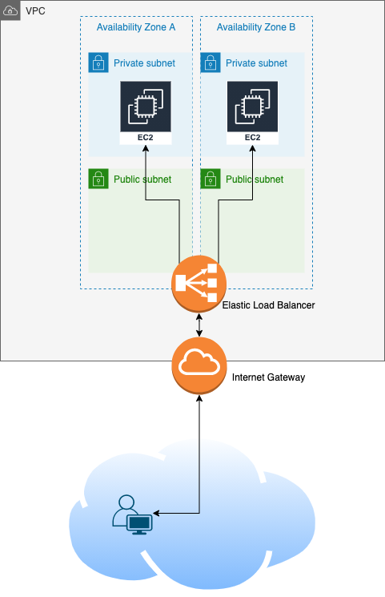

ELB LAB
In this lab, you will setup a VPC infrastructure with 4 subnets (2 private for the private servers, 2 public for the load balancer), 2 web servers and an Elastic Load Balancer to balance the web traffic between both servers.

Infrastructure setup:
Create a VPC:
- Login to your AWS account
- Go to VPC Services and on the left panel, click on Your VPCs
- Click on Create VPC and give it a name (i.e. VPC-ELB-LAB) and a /16 CIDR block (i.e. 192.168.0.0/16), then leave the rest as default and click Create VPC
- Go back to the Your VPCs tab and check that your VPC has been created
Create subnets:
We will create 4 subnets, where Subnets 1 and 2 will be used for public, and Subnets 3 and 4 will be used for private.
- Go to VPC Services and on the left panel, click on Subnets and create the subnets:
- Click on Create Subnet
- choose your VPC from the list
- give it a name (Sub1-ELB-LAB)
- choose Availability Zone A
- CIDR: 192.168.1.0/24
- Click Create Subnet
- Click on Create Subnet
- choose your VPC from the list
- give it a name (Sub2-ELB-LAB)
- choose Availability Zone B
- CIDR: 192.168.2.0/24
- Click Create Subnet
- Click on Create Subnet
- choose your VPC from the list
- give it a name (Sub3-ELB-LAB)
- choose Availability Zone A
- CIDR: 192.168.3.0/24
- Click Create Subnet
- Click on Create Subnet
- choose your VPC from the list
- give it a name (Sub4-ELB-LAB)
- choose Availability Zone B
- CIDR: 192.168.4.0/24
- Click Create Subnet
Create route tables:
- In the VPC Services tab, click on Route Tables and create a public and a private route tables:
- Click on Create Route Table
- choose your VPC from the list
- give it a name (PublicRT-ELB-LAB)
- Click Create
- Click on Create Route Table
- choose your VPC from the list
- give it a name (PrivateRT-ELB-LAB)
- Click Create
Make the public route table PUBLIC:
- In the VPC Services tab, click on Internet Gateways
- Click on Create Internet Gateway
- give it a name (IGW-ELB-LAB) and Create
- Once it is created, you should be on its configuration page:
- click Actions and select Attach to VPC
- select your VPC and Attach
Now, create an Internet route in your public route table:
- In the VPC Services tab, click on Route Tables
- On the Route Tables interface, look for your public route table:
- select PublicRT-ELB-LAB
- on the panel at the bottom, click on Routes then Edit routes
- Click Add route, set the following:
- Destination: 0.0.0.0/0 (0/0 means everywhere, it is not restricted to a specific network)
- Target: Select Internet Gateway from the drop-down and click on IGW-ELB-LAB
- Save the changes
And add the public subnets to it:
- On the Route Tables interface, look for your route table:
- click on Subnet Associations
- Edit subnet associations and select Sub1-ELB-LAB and Sub2-ELB-LAB then save
Servers deployment:
We want 2 servers to host the same content to allow the load balancer to balance the traffic between both. In our setup, the load balancer will be public (accessible from the Internet) and will have 2 roles: serve the servers web content and protect the servers from being accessed. As a result, the servers will remain private and “hide” behind the load balancer.
Create a private instance:
Configure the web servers:
The instances are currently private, with no public IP. We will make them public just to be able to access them easily and setup the content, after which we will make them private again.
Note: When you launch an instance directly with a public IP address, you can’t remove it. Here we only want temporary public access, so we will assign what we call Elastic IP addresses - they are public IPs that you create separately and can attach to and detach from instances as you wish.
- In the EC2 Services tab, scroll down to Network & Security and click on Elastic IPs:
- Click on Allocate Elastic IP address
- Leave everything as default and click Allocate
- Edit the name (which should be empty) and give it a name “EIP-WS1”
- Select it and click on Actions then *Associate Elastic IP address"
- Choose WebServer1 and Associate
- Create a second elastic IP, call it “EIP-WS2” and associate it to WebServer2
Go to the EC2 instances tab and select WebServer1, check on the bottom details that there is an Elastic IP address. Do the same for WebServer2.
Now we need to give them a route to the Internet, so we will temporarily associate the private subnets (Sub3-ELB-LAB and Sub4-ELB-LAB, in which our servers are living) to the public route table, and move them back when we are done.
- In the VPC Services tab, click on Route Tables
- On the Route Tables interface:
- select the route table PublicRT-ELB-LAB
- on the panel at the bottom, click on Subnet Associations
- Edit subnet associations, select both Sub3-ELB-LAB and Sub4-ELB-LAB and Save
Now you should be able to SSH into both instances.
- For each instance, login with SSH and run the below commands in order to install an http server :
In the last command where you create your html file, REPLACE THE X WITH 1 FOR THE FIRST INSTANCE, AND 2 FOR THE SECOND INSTANCE.
sudo su
yum install httpd -y
service httpd start
chkconfig httpd on
cd /var/www/html
echo "<html><h1>Hello World X</h1>" > index.html
- Verify the configuration:
- For each instance, copy its elastic IP address, replace the ELASTICIP in the following URL HTTP://ELASTICIP/index.html
- Open a browser and enter the URL
Now we know our web servers are working, we can move the instances back to private:
- Go to the public route table and remove Sub3-ELB-LAB and Sub4-ELB-LAB subnets associations
- Go to the private route table and associate both subnets
- Go to the Elastic IPs and disassociate each Elastic IP from the web servers
If you browse the URLs again now, you should not get anything anymore.
Elastic Load Balancer deployment:
Configure the load balancer:
- In the EC2 Services tab, scroll down to Load Balancing and click on Load Balancers:
-
Click on Classic Load Balancer
- Name: ELB-LAB4
- Create ELB Inside: Select your VPC
- Create an internal load balancer: leave the box empty because we want it public
- Enable advanced VPC configuration: Check the box
- Make sure the Listener is on HTTP port 80 (because our web content lives on HTTP)
- Select Subnets: Click on the + button of Sub1-ELB-LAB and Sub2-ELB-LAB
-
Click Next and configure a new Security Group:
- Name it ELB-SG
- Add a rule for HTTP on port 80 with a source “Anywhere”
-
Click Next to Security Settings then Next again to Configure health Check:
- The settings should be set to:
- ping protocol: HTTP
- ping port: 80
- ping path: /index.html (because we configured the web content in an index.html file in the servers previously)
-
Click Next to Add EC2 instances:
- Select WebServer1 and WebServer2
-
Click Next then Next then Review and Create
Let’s now restrict the access to the web servers only from the load balancer, given the load balancer will be the one giving us the content.
- Go back to your EC2 instances, and one by one:
- Select the instance and click on the Security tab at the bottom panel
- Click on the security group and edit the inbound rules:
- Modify the source of the HTTP rule by selecting custom, and then scroll through the list to find the the security group of the load balancer, ELB-SG.
- While you’re there, you can modify the source of the SSH rule to “MyIP”
- Save
- You do not need to do the same for the second instance since they are using the same security group.
Now your load balancer should be ready, go back to it, select it and check the bottom panel - you should see both web servers in the Instances tab at the bottom, they should show “in-service” after a little while.
Access the html content through the load balancer:
On the description tab, copy the DNS name of the load balancer and replace the ELBDNS in the URL and browse to HTTP://ELBDNS. You should see the index content of one of the servers, and if you keep refreshing it you should see it changing between “Hello World 1” and “Hello World 2”.
That’s when we want to use Route53 DNS. The lab is now over, however you can read the Route53 section below to understand how we would use DNS in this context.
ROUTE 53 (NOT PART OF THE LAB):
Let’s assume now many users will access this application, but the URL is not very friendly and quite difficult to remember. So, we will not implement it in this lab because we do not own any DNS domain and would need to pay to own one, but here is what we would do:
- Go to Route53
- Create a public hosted zone (basically a DNS domain accessible publicly)
- Inside this zone, create a CNAME record or Alias record (they differ a little but achieve the same goal of mapping a name to a name) to do:
- newfriendlyname.mynewdomain.com = loadbalancerdnsname.elb.eu-west-1.amazonaws.com
You’re done! If you want to play a bit, you can stop one of the servers and browse to the ELB DNS name again to make sure that the traffic is only routed to the running server.
Also, don’t forget to cleanup your resources once you’re done.